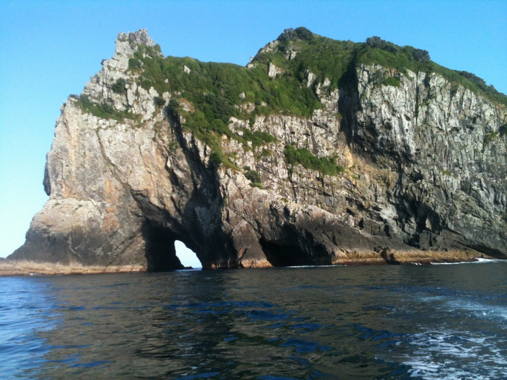
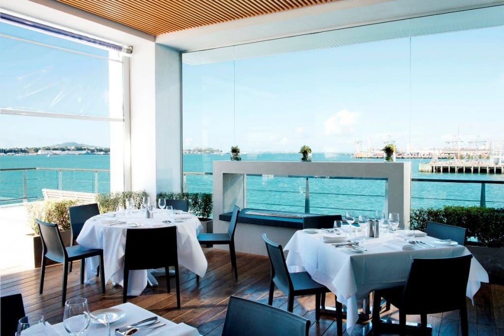
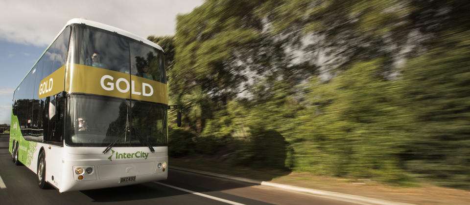

Lieux touristiques
tout d'abord nous avons Bay Of Islands ,Kayak le long de la côte, randonnée sur les sentiers
de l'île, profiter dans les criques isolées, et explorer les forêts intactes. Vie marine
abondante incluant dauphins, baleines, gros marlins et pingouins , deuxième Tongariro National
Park ,Des volcans imposants, des forêts sauvages, des plateaux arides, des sources chaudes,
des champs d'herbes, des lacs turquoise et des prairies luxuriantes offrent un paysage
mélodramatique.

Hôtels et restaurants
fruits de mer sont bien connus en Nouvelle-Zélande , et vous pouvez trouver des repas prémuim
et abordable , ici quelques restaurants célèbres : Ortolana,Mudbrick,Pacifica Restaurant
pour les hôtels c'est un peu cher dans la plupart des îles mais tous sont 5 étoiles et plus.

Transport
Bien que les bus soient la principale forme de transport public en Nouvelle-Zélande, il y a aussi
des trains et des ferries. Pour voyager entre les îles, montez sur un ferry. Plusieurs ferries
de passagers et de véhicules offrent des services entre le Nord, le Sud et d'autres îles.